Eloquii — From first interest to completed order
A cohesive shopping journey connects the moments before, during and after checkout. At Eloquii, that meant bringing email and text signup, product discovery, Quick Shop and payment into one consistent experience.
I designed the journey around how our customers shopped, with clear product information, easier-to-use controls and shorter paths for returning customers. Built in-house, it gave our team control over costs, promotions and ongoing refinement.
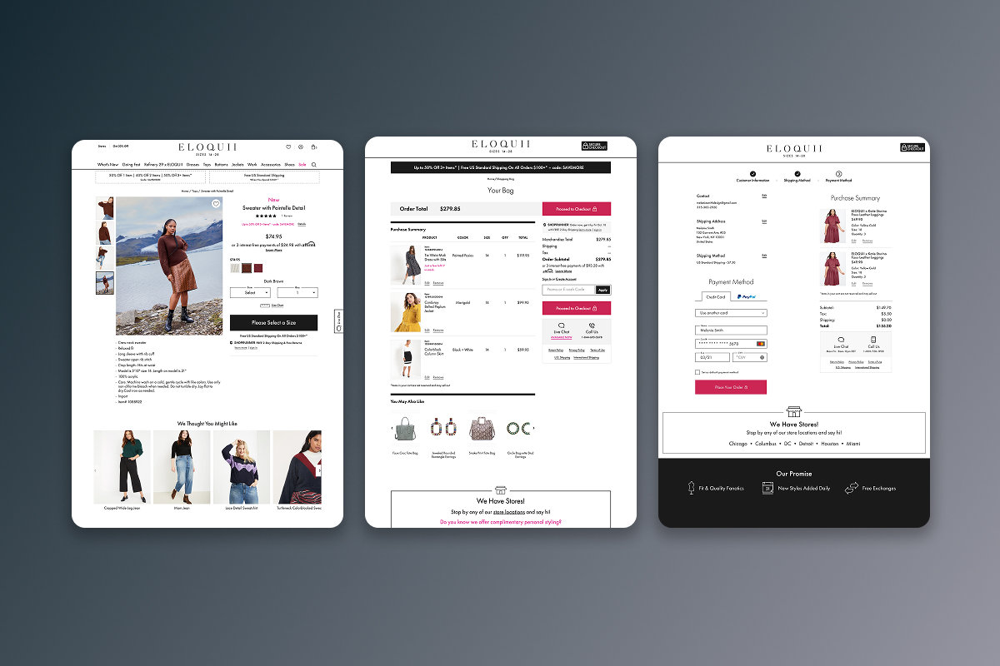
Problem
Checkout began long before a customer reached the bag. An email could bring someone to a category page, a product could prompt a question about fit, and an unavailable size could interrupt an otherwise promising visit. I approached these moments as one connected shopping journey.
The goal was to make each next step clear while giving Eloquii control over the experience, its costs and the way it supported sales.
Process
We built the shopping and checkout experience in-house to manage costs and tailor it to our customers. Familiar ecommerce patterns provided a baseline; the work was in adapting those patterns to Eloquii and refining them through testing over time.
I treated desktop, mobile and the iOS app as parts of the same experience. Larger, easier-to-tap controls, clear product information and consistent interactions were central to that approach.
Solution
Email and text signup supported an ongoing relationship with customers, while product-specific waitlists gave sold-out interest a useful next step. Reviews, fit information and prominent product controls helped shoppers decide what to buy.
Quick Shop let customers choose options from a category page. The bag panel kept their selections close to the browsing experience, and the full bag brought product details, totals and promotions together before checkout.
The checkout followed customer information, shipping and payment. Guests had a direct way in; signed-in customers could use saved details to move through the process sooner. Order summaries and editing controls kept key decisions visible.
Building the experience internally gave us control over where promotions appeared and where promo entry stopped, how customer information carried forward, and how the flow could evolve while staying consistent with the brand.
Outcome
The work connected product discovery, purchase decisions and checkout within a cohesive Eloquii experience. It gave the business an owned foundation for testing and refinement, and gave customers a consistent path from first interest to order confirmation.
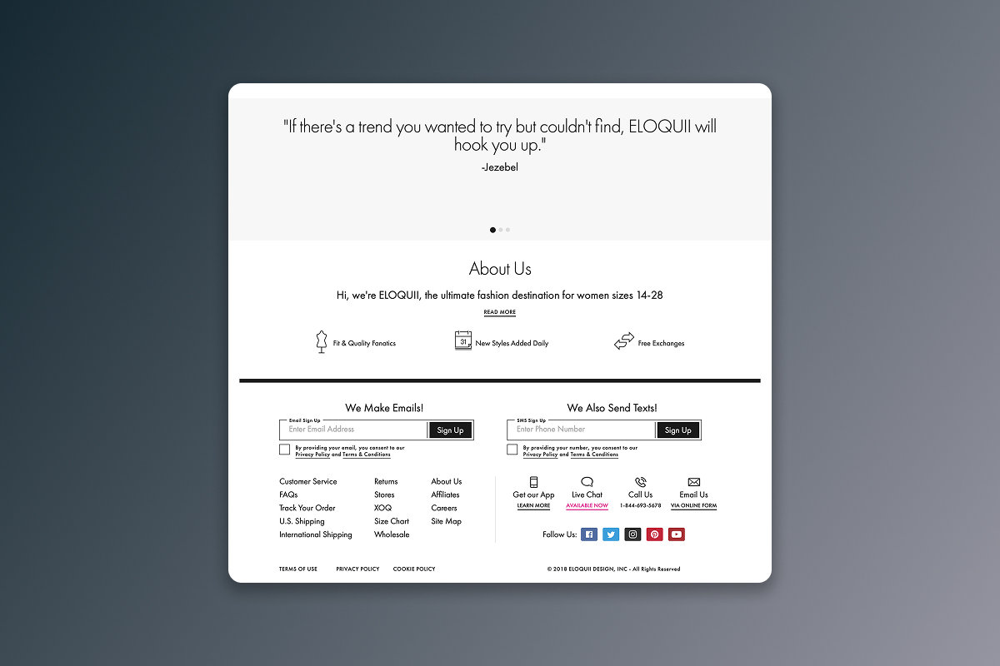
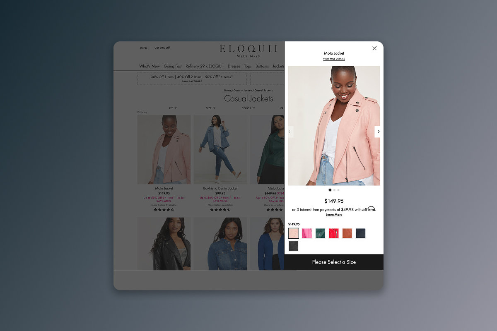
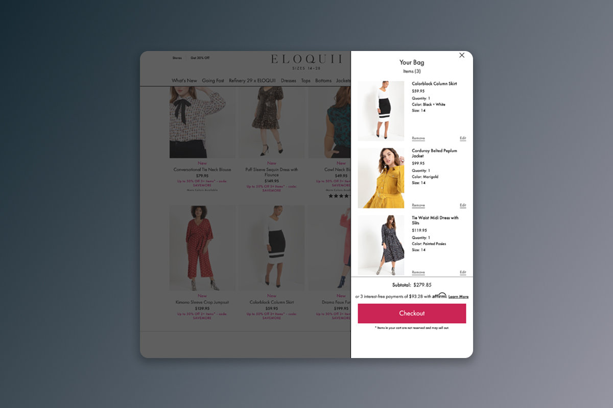
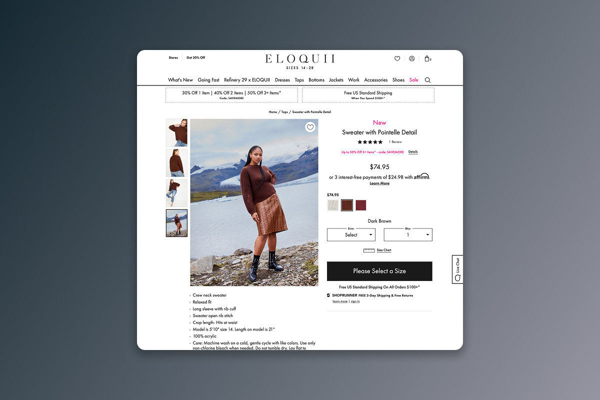
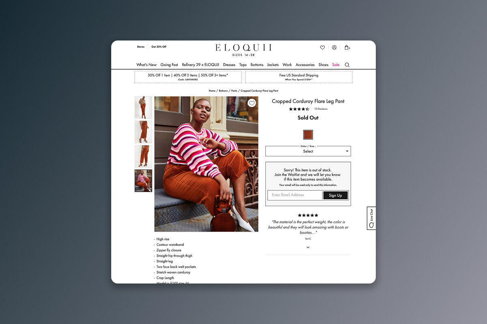
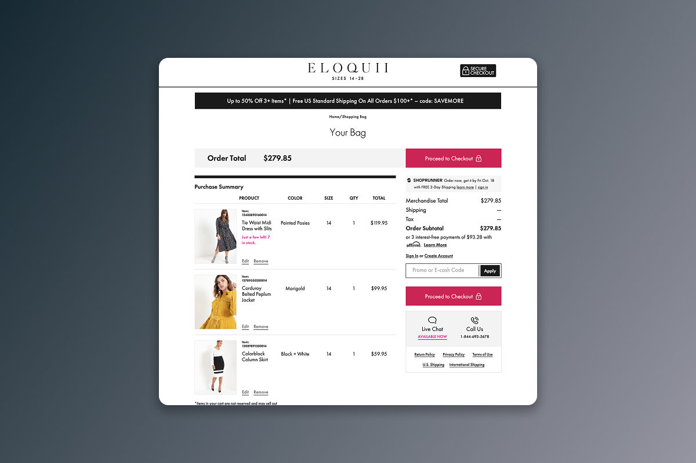
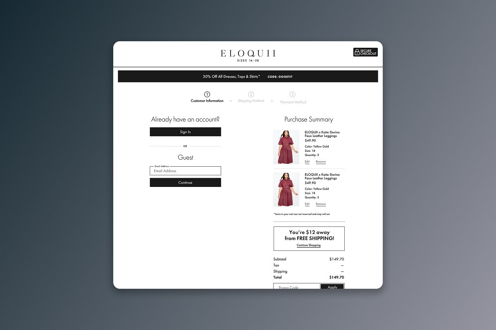
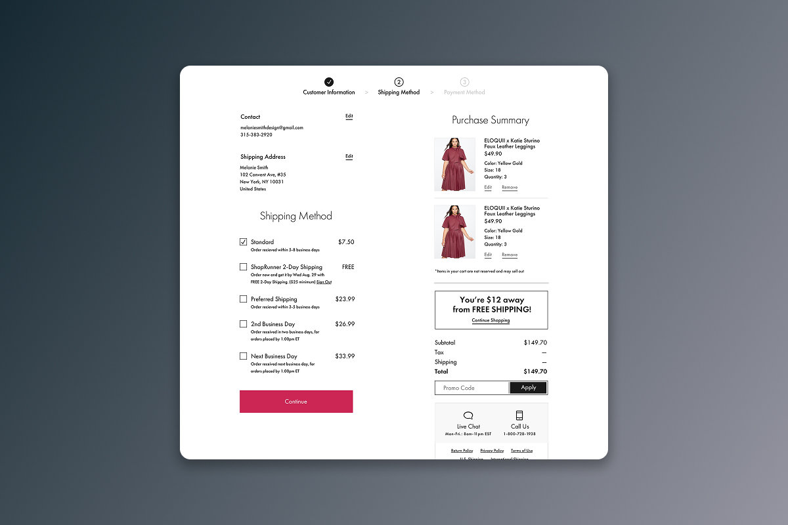
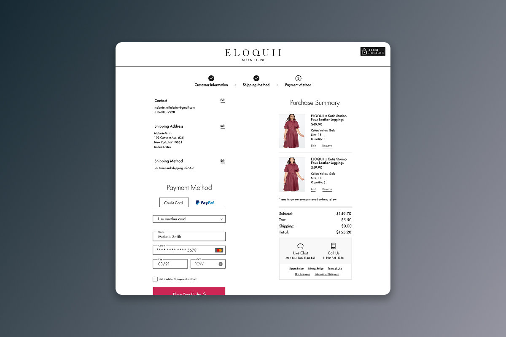
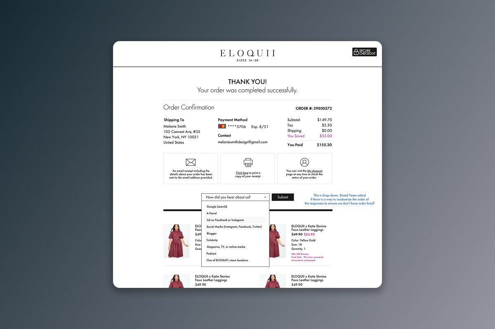